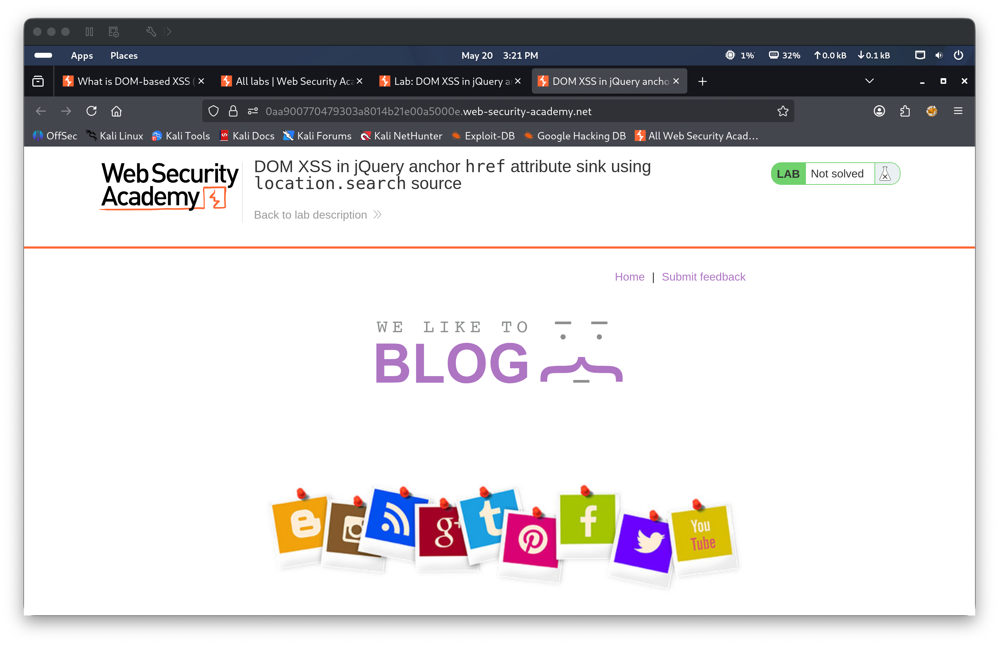
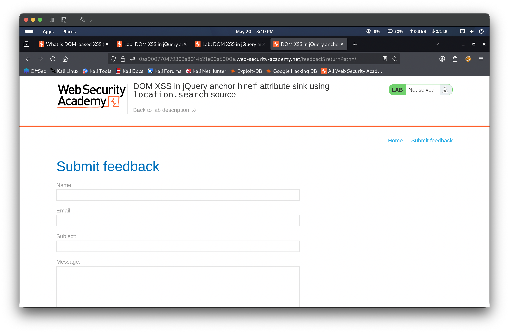
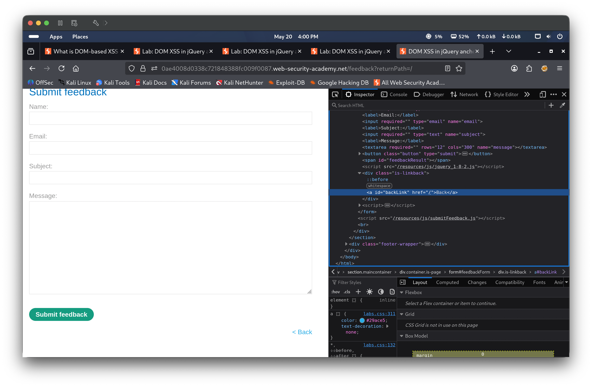
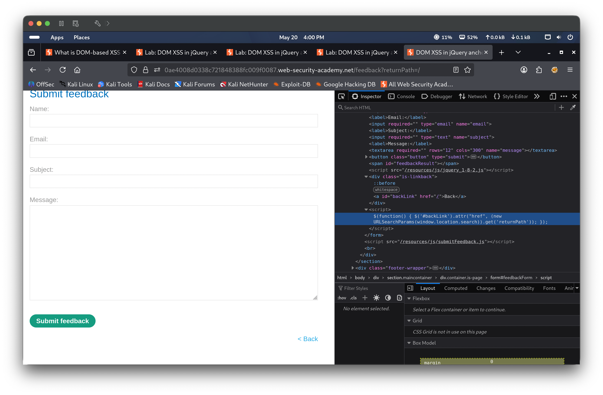
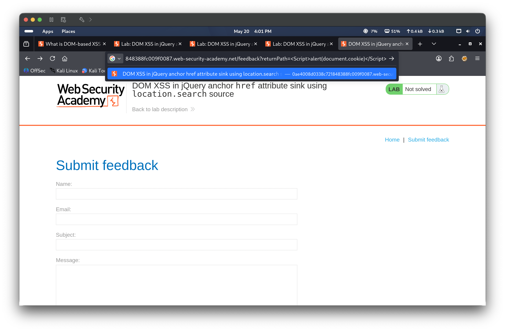
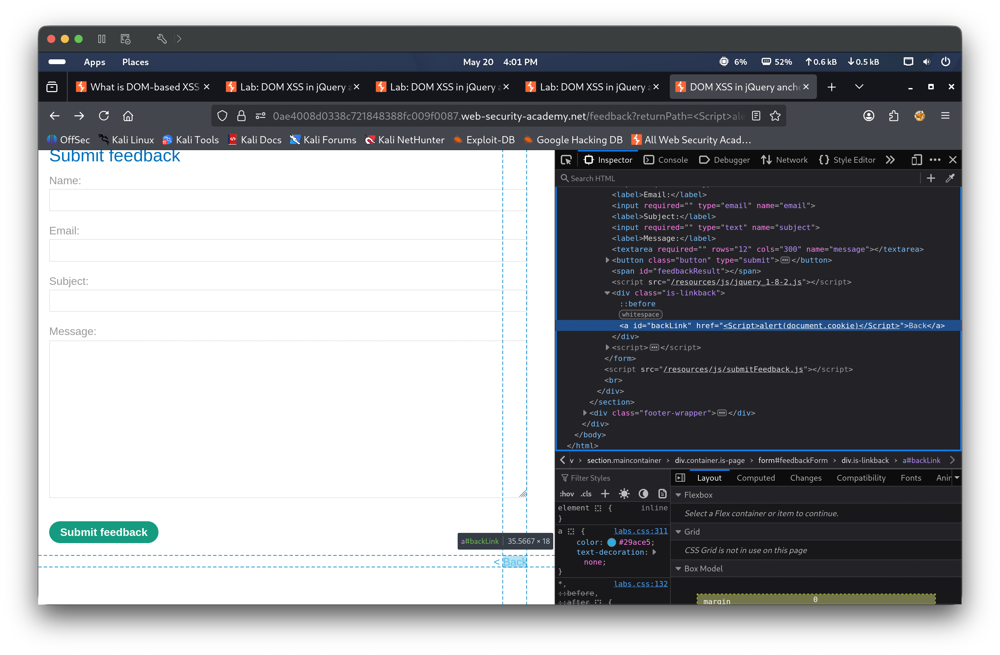
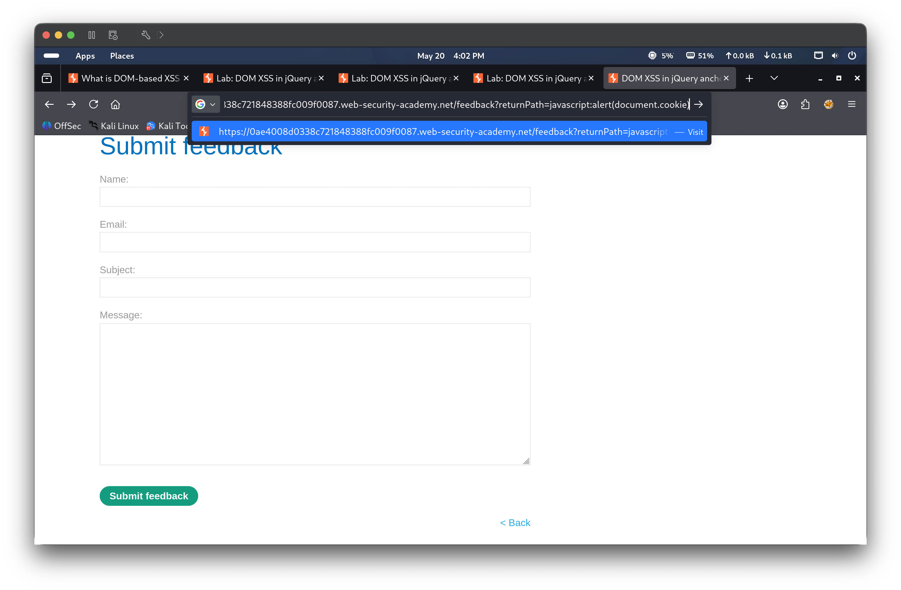
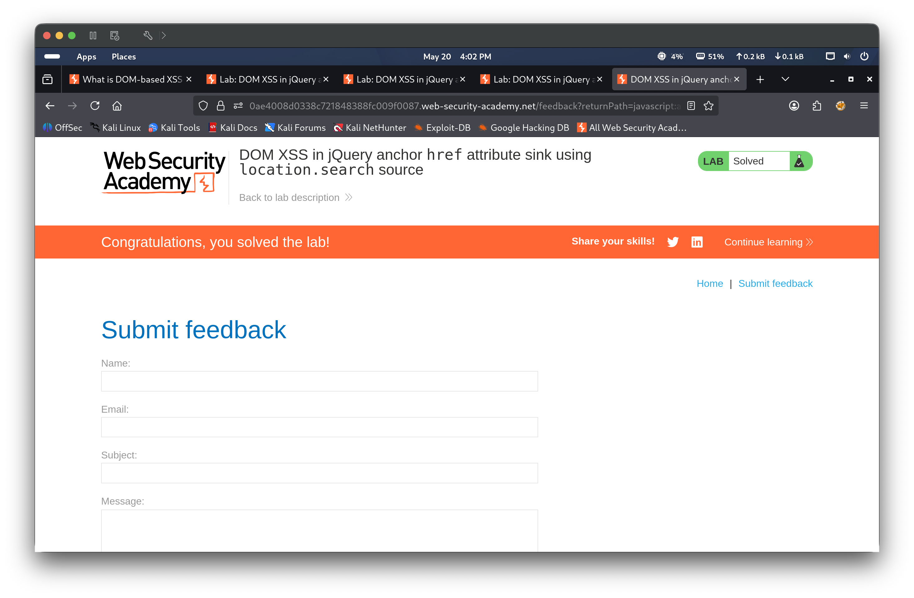
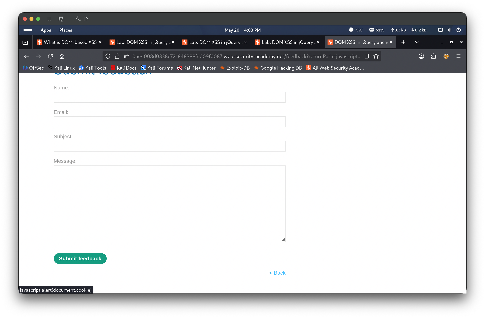
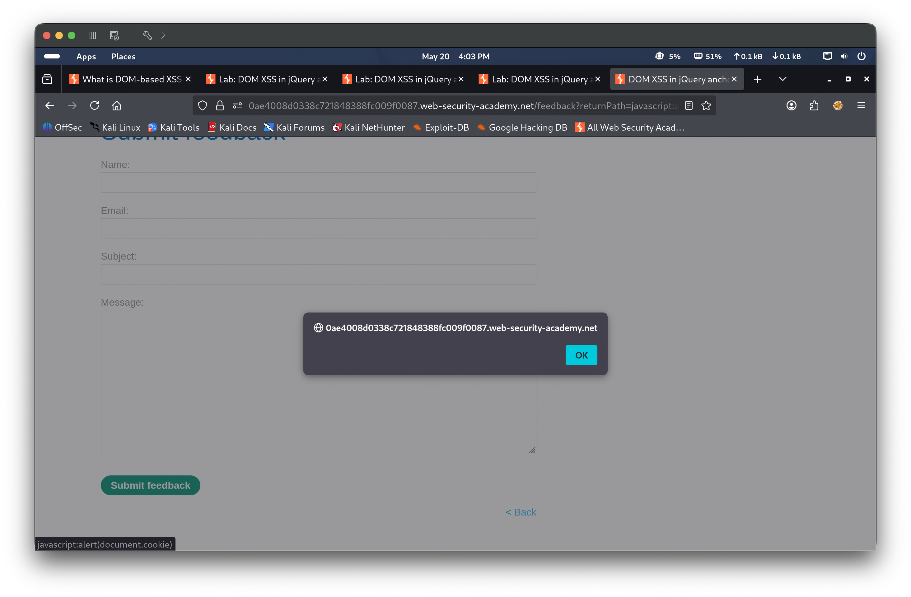

Portfolio / Labs / XSS / Lab 5 — DOM XSS in jQuery anchor href attribute sink using location.search source
Lab 5 — DOM XSS in jQuery anchor href attribute sink using location.search source
🟡 Medium📅 2026-05-20
📋 Finding Summary
Field
Value
Type
Web App
Severity
🟡 Medium
CVE / CWE
CWE-79
Date
2026-05-20
🔍 Description
DOM-based Cross-Site Scripting occurs when client-side JavaScript reads attacker-controllable data from the DOM (the source) and passes it to a dangerous sink without sanitization. In this lab, the feedback page uses jQuery’s .attr() method to set the href attribute of a “Back” anchor element using the returnPath parameter from location.search. Because the value is not validated, an attacker can supply a javascript: URI as the returnPath value. When the victim clicks the Back link, the browser evaluates the URI and executes the injected JavaScript — in this case, alert(document.cookie).
🎯 End Goals
Identify the vulnerable source (location.search → returnPath) and sink (jQuery .attr() on the Back link’s href)
Understand why <script> tags injected into an href do not execute
Craft a javascript: URI payload that executes when the Back link is clicked
Trigger alert(document.cookie) and solve the lab
🪜 Steps to Reproduce
Access the lab and navigate to the Submit Feedback page
Inspect the page source to identify the jQuery sink setting the Back link’s href from returnPath
Attempt a <script> tag payload via the returnPath parameter and confirm it does not execute
Replace the payload with javascript:alert(document.cookie) in the returnPath parameter
Click the Back link to trigger the javascript: URI and confirm the alert fires
🧠 Analysis
Step 1 — Access the lab The lab environment loaded a blog application with a “Submit feedback” link in the navigation. The lab status showed “Not solved”.

Step 2 — Navigate to the Submit Feedback page Clicked “Submit feedback” — the feedback form loaded. The URL contained a returnPath parameter (e.g. ?returnPath=/) which is used to set the destination of the “Back” link on the page.

Step 3 — Inspect the DOM — Back link identified DevTools was opened and the <a id="backLink"> anchor element was inspected. Its href attribute is set dynamically from the returnPath URL parameter, confirming this element as the injection point.

Step 4 — Inspect the jQuery sink The page source revealed the jQuery function responsible for the sink: $(function() { $('#backLink').attr("href", (new URLSearchParams(window.location.search)).get('returnPath')); });. This reads the returnPath parameter from location.search and passes it directly to jQuery’s .attr() to set the href — with no sanitization or validation.

Step 5 — Inject <script> payload (no execution) The URL was modified to set returnPath=<Script>alert(document.cookie)</Script>. The payload was injected into the URL and passed through to the href attribute, but the script tag did not execute — browsers do not evaluate <script> tags placed inside an href attribute.

Step 6 — Confirm href updated with script payload in DOM DevTools confirmed the <a id="backLink">href attribute was updated to the <script> payload value — proving the injection point works. However, since script tags are inert in href context, a javascript: URI was needed to achieve execution.

Step 7 — Craft correct payload using javascript: URI The URL was modified to set returnPath=javascript:alert(document.cookie). The browser tooltip on the Back link confirmed the href was now set to javascript:alert(document.cookie), meaning clicking the link would execute the payload directly in the browser.

Step 8 — Lab solved Navigating to the feedback page with the javascript: payload caused the lab to register as solved — the “Congratulations, you solved the lab!” banner appeared and the status updated to Solved.

Step 9 — Hover over Back link — javascript: URI confirmed Hovering over the < Back link showed javascript:alert(document.cookie) in the browser status bar, confirming the href attribute was successfully poisoned with the malicious URI.

Step 10 — alert fires with cookie value Clicking the < Back link triggered the javascript: URI. An alert dialog appeared displaying the value of document.cookie, confirming successful execution of the injected script in the context of the vulnerable page.

🎯 Impact
An attacker who can control the returnPath parameter — for example by crafting a malicious link and sending it to a victim — can execute arbitrary JavaScript in the victim’s browser when the victim clicks the Back link. This can be used to steal session cookies, capture credentials, perform actions on behalf of the user, or redirect to phishing pages. The use of a javascript: URI makes this a user-interaction-dependent but highly reliable attack vector.